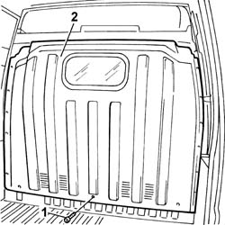

7210L10 CAB REAR PARTITION - R.R.
- Path
- Procedures > 72 PANELS AND FRAME > 7210 REMOVING REFITTING > 7210L SPECIFIC PARTS FOR COMMERCIAL VEHICLE > 7210L10 CAB REAR PARTITION - R.R.
- Kind
- repair procedure (removal / refitting; the operation number is the code)
- Applies to
- all engines; all production periods; only with equipment: Van
- Interactive page
- https://sloeber94.github.io/elrnDB-fDct/en/#/244001570
Applies to: all engines; all production periods; only with equipment: Van
 Removing
Removing
 Refitting
Refitting